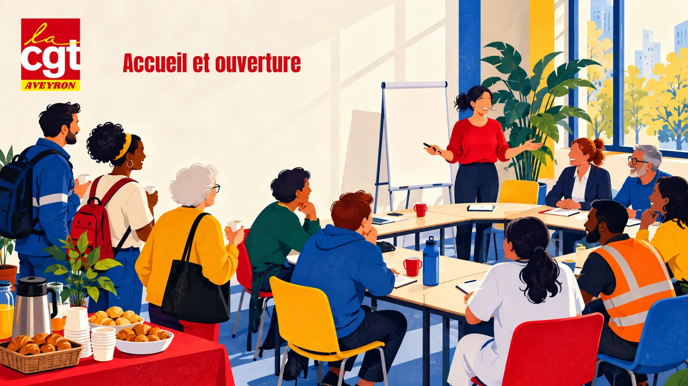
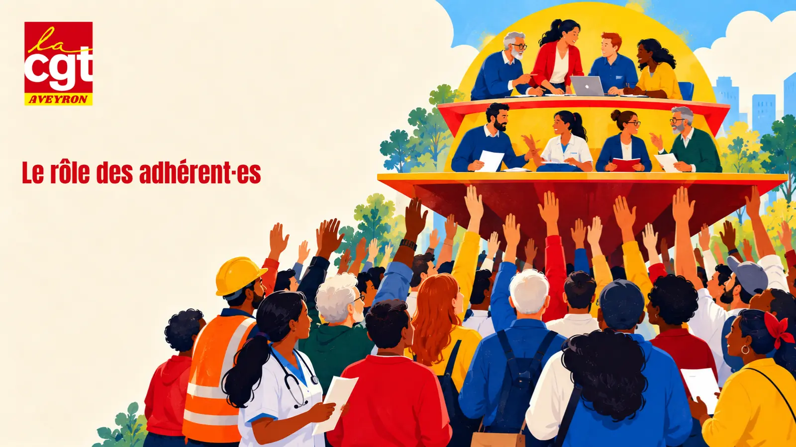
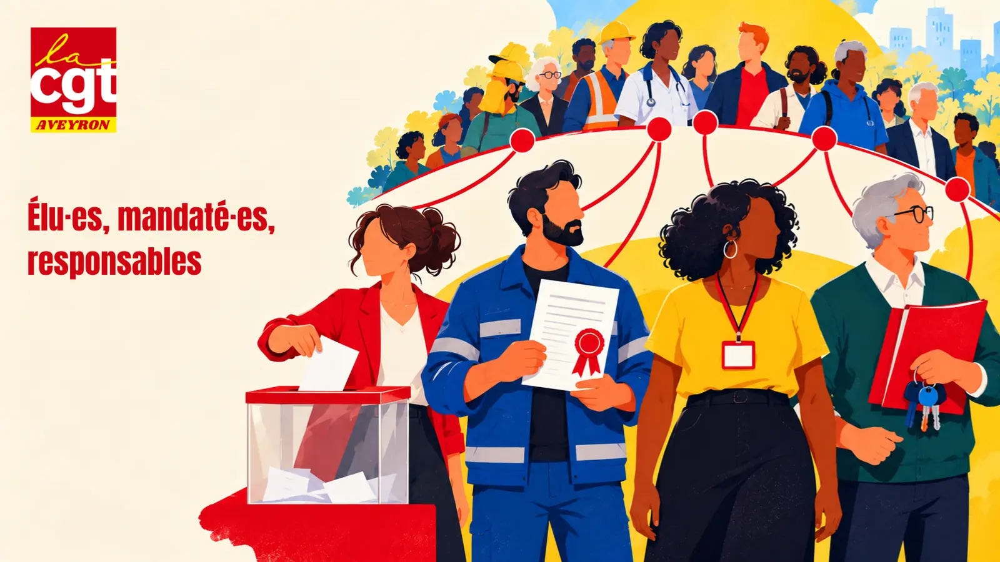
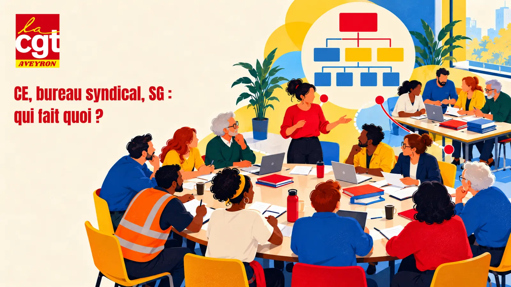
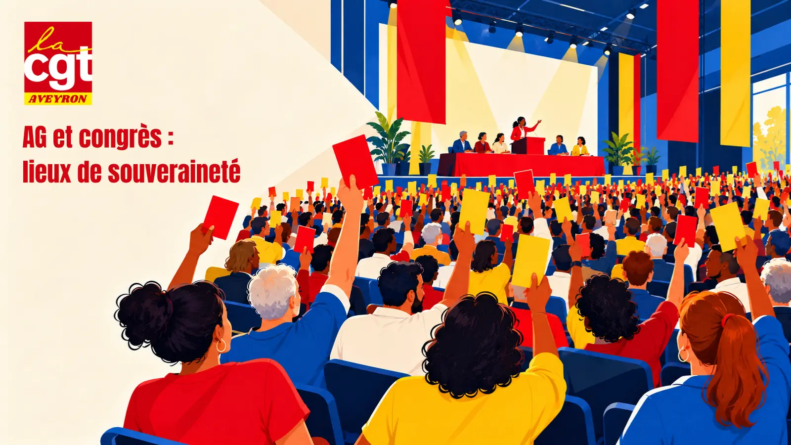
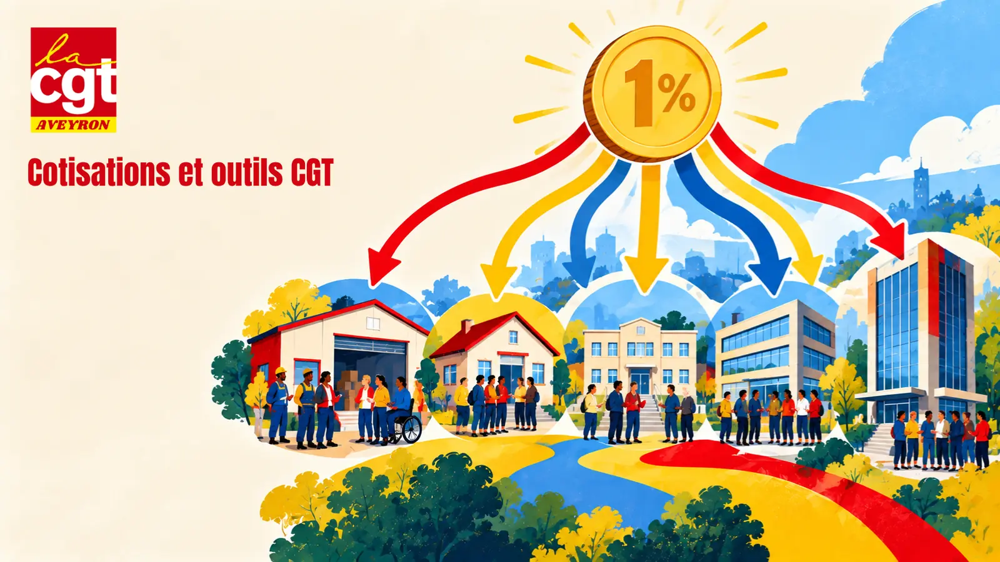
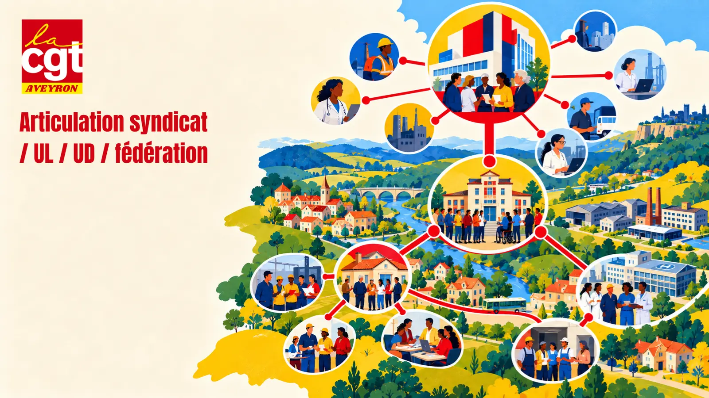
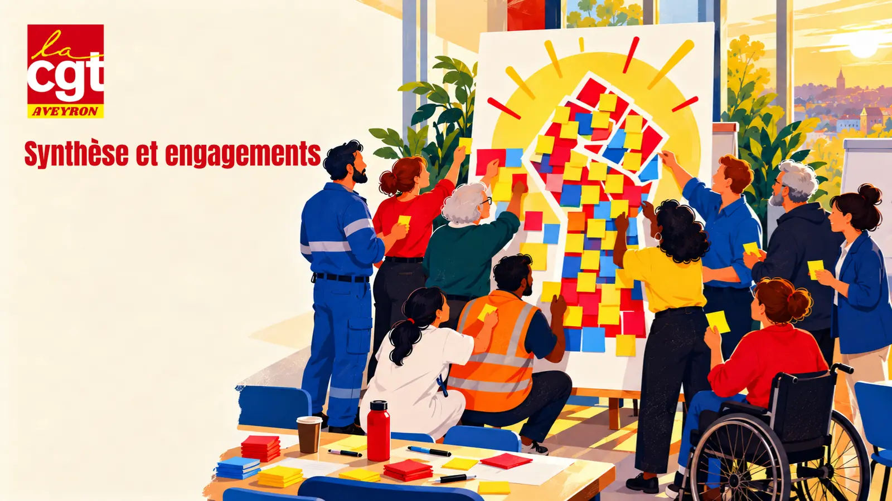

🕒 Séquence prévue : 9h00 - 9h30
Il n'y a pas de question bête. On écoute sans couper la parole.
Pour être pleinement présent·es ensemble.
Chacun·e peut se lever, bouger ou sortir un moment si besoin.
🕒 Séquence prévue : 9h30 - 10h15
Objet, adhésion, instances, cotisation, affiliations, modification et dissolution : tout le fonctionnement du syndicat.
Le congrès des syndiqué·es est souverain ; chaque instance est élue et rend compte.
Déposés en mairie avec la liste des dirigeant·es, ils font exister le syndicat. Il faut 2 ans d'existence pour présenter des listes ou désigner un·e DS.
Le syndicat adhère à une union départementale et à une fédération, et fait siens les statuts de la CGT.
📊 Module interactif : le modèle de statuts article par article →

🕒 Séquence prévue : 10h15 - 11h00

🕒 Séquence prévue : 11h15 - 12h00
Choisi·e par les salarié·es aux élections professionnelles, sur une liste décidée par les syndiqué·es : CSE, CSA, CAP…
Désigné·e par le syndicat ou une structure de la CGT : délégué·e syndical·e, RS au CSE, conseiller·ère du salarié, défenseur·e syndical·e…
Nommé·e par une instance pour une mission : membres de la CSSCT ou représentant·es de proximité désignés par le CSE.
Élu·e par les instances du syndicat pour le diriger : membre de la CE, du bureau, secrétaire général·e, trésorier·ère.
👥 Module interactif : les rôles dans le syndicat →

🕒 Séquence prévue : 12h00 - 12h30
Élue par le congrès. Dirige entre deux congrès, se réunit au moins une fois par mois, approuve les comptes.
Élu par la CE, au minimum un·e SG et un·e trésorier·ère. Met en œuvre les décisions, prépare la CE.
Élue par le congrès hors de la CE (impair, au moins 3). Contrôle la gestion et rend compte à la CE et au congrès.
👥 Module interactif : qui fait quoi dans le syndicat →

🕒 Séquence prévue : 13h30 - 14h30
Pour être reconnu représentatif, un syndicat doit remplir ces critères cumulatifs. Faire vivre ses statuts, c'est déjà en remplir plusieurs.
🗳️ Module interactif : autodiagnostic des 7 critères et simulation de vote →

🕒 Séquence prévue : 14h30 - 15h15
Le système qui répartit les cotisations : le syndicat garde sa part et reverse le reste, réparti automatiquement entre toutes les structures.
Le fichier des syndiqué·es : suivre les adhésions, les parcours, éviter les ruptures (changement d'employeur, retraite).
💰 Module interactif : calculer et comprendre la cotisation →

🕒 Séquence prévue : 15h30 - 16h15
Syndicat → union professionnelle (USD, CSD, USTM…) → fédération
Avec celles et ceux qui font le même métier : conventions collectives, revendications de branche.
Syndicat → union locale → union départementale → comité régional
Avec tous les salarié·es d'un même territoire, toutes professions confondues.
Les organisations de la CGT « recherchent entre elles, en permanence, la coopération, la complémentarité avec les autres composantes de la CGT, la prise en compte des intérêts communs à l'ensemble des salariés ».Statuts de la CGT, article 21, cité par la charte de la vie syndicale
Aucune structure ne travaille seule : le syndicat informe à la fois son UD et sa fédération ; l'UL, l'UD et la fédération sont au service des syndicats.

🕒 Séquence prévue : 16h15 - 17h00
Notre règle commune : à jour, déposés, vivants.
Ce sont eux et elles qui décident.
Ils partent du syndicat et lui rendent compte.
CE, bureau, SG, CFC : chacun son rôle.
7 critères, que nos pratiques font vivre.
Deux jambes, territoire et profession, et la coopération (art. 21).
📝 Questionnaire d'évaluation de la formation →
Toute personne syndiquée à la CGT, base de l'organisation.
Personne élue par les salarié·es lors d'élections professionnelles (ex : CSE).
Militant·e désigné·e par le syndicat pour représenter la CGT dans une instance extérieure.
Militant·e élu·e ou désigné·e à la direction du syndicat (ex : SG, trésorier·e).
Réunion de tous les syndiqué·es du syndicat, instance de décision souveraine.
Temps fort statutaire pour définir l'orientation, élire la direction et faire le bilan.
Instance élue qui prend les décisions collectives entre deux AG.
Équipe restreinte chargée d'animer au quotidien les décisions de la CE.
Structure CGT sur un territoire, proche des syndicats locaux.
Structure CGT à l'échelle du département, appui aux syndicats et formation.
Structure professionnelle regroupant les syndicats d'une même branche d'activité.
Organisation nationale de la CGT, coordonne l'ensemble des structures et définit les orientations générales.
Instance représentative du personnel dans l'entreprise, remplaçant les anciennes instances (CE, DP, CHSCT).
Système de répartition des cotisations syndicales entre les différentes structures de la CGT.
Document fondamental définissant les règles de fonctionnement d'un syndicat, ses objectifs et son organisation.
Premier·ère responsable d'un syndicat, élu·e pour coordonner l'activité et représenter l'organisation.
Responsable de la gestion financière du syndicat, des cotisations et de la politique financière.
Action de recruter de nouveaux adhérents, élément essentiel du renforcement de l'organisation.
Contribution financière des adhérents (1% du salaire net), ressource principale du syndicat.
Principe fondamental de la CGT garantissant la participation des adhérents aux décisions et orientations.
Mission confiée par le syndicat à un·e militant·e pour le représenter dans une instance ou une négociation.
Dispositif d'éducation permettant aux militants d'acquérir des connaissances et compétences nécessaires à l'action syndicale.
Demande formulée par le syndicat pour améliorer les conditions de travail ou les droits des salariés.
Mobilisation des salariés (grève, manifestation, pétition) pour faire aboutir des revendications.
Processus de discussion entre employeurs et syndicats pour établir des accords sur les conditions de travail.
Capacité légale d'un syndicat à négocier et signer des accords, reconnue selon 7 critères cumulatifs (art. L2121-1 du Code du travail), dont l'audience aux élections professionnelles.
À ouvrir pendant la séquence correspondante, ou à projeter avec leur mode projection.
Pour imprimer ou exporter en PDF cette séquence :